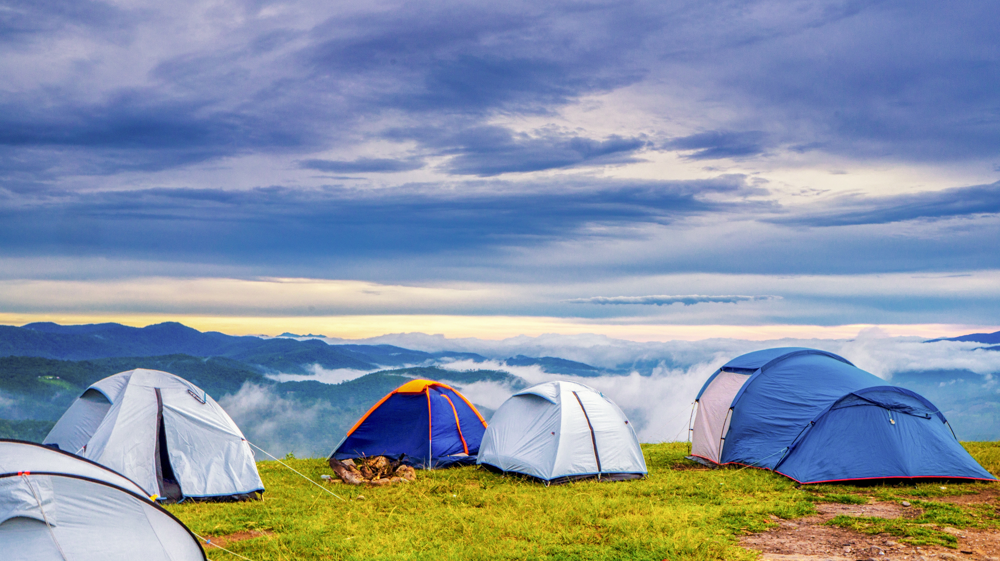

Experience the ultimate rush on our signature white water rafting trip. This high-adrenaline adventure takes you through the heart of Canyon Echo, featuring exhilarating Class III and IV rapids. You will navigate tight turns, powerful currents, and massive waves alongside our expert guides who prioritize your safety while ensuring the thrill of a lifetime. All necessary safety gear, including professional-grade helmets and personal flotation devices, is provided.

If you prefer a gentler pace, our Serene River tour offers an immersive look at the local ecosystem. Drift quietly through calm waters while observing native wildlife and lush landscapes. This trip is perfect for families, photographers, and nature lovers who want to appreciate the beauty of the river without the rush of rapids. We provide comfortable, stable inflatable rafts and binoculars for wildlife spotting.

Disconnect from the world and wake up to the sounds of the river. Extend your adventure by staying overnight at our exclusive riverside campsite. This trip combines a scenic river approach with a night under the stars. We provide high-quality, weather-resistant tents, sleeping mats, and a hearty campfire dinner prepared by our staff. Wake up to the fresh mountain air and enjoy a morning coffee by the water before heading back.
Available Rafting Trips
| Trip Name | Duration | Difficulty | Price |
|---|---|---|---|
| Canyon Echo Rafting Expedition | Full Day | Advanced | $150 |
| Serene River Nature Tour | 3 Hours | Easy | $85 |
| Riverside Wilderness Camping | 2 Days / 1 Night | Moderate | $220 |